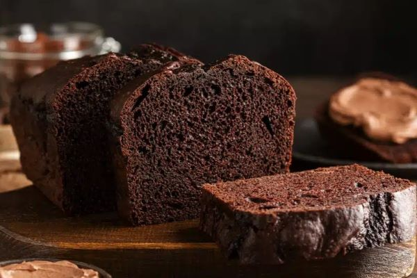

Bolo de cacau

Ingredientes
| Nome | Quantidade |
|---|---|
| açúcar | 1 xícara (chá) |
| bicarbonato de sódio | 1/4 colher (chá) |
| cacau em pó | 1/2 xícara (chá) |
| farinha de trigo | 1 1/2 xícara (chá) |
| fermento | 1 1/2 colher (chá) |
| leite de coco | 1 xícara (chá) |
| óleo vegetal | 1/2 xícara (chá) |
| ovos | 2 |
Passos
- Misture os ingredientes secos, com exceção do fermento, em um mesmo recipiente. Em um segundo recipiente misture os ovos e os ingredientes íquidos.
- Adicione aos poucos a mistura de ingredientes secos à mistura líquida, batendo até que fique uniforme.
- Adicione o fermento e bata até que a massa fique homogênea.
- Transfira a massa para uma assadeira untada e leve ao forno baixo pré-aquecido.
- Assar por 30 a 40 minutos.